import numpy as np
import shapely
import matplotlib.pyplot as plt
import geopandas as gpd
import rasterio
import rasterio.mask
import rasterstats
import rasterio.plot
import rasterio.features
import math
import os5 Raster-vector interactions
Prerequisites
This chapter requires importing the following packages:
It also relies on the following data files:
src_srtm = rasterio.open('data/srtm.tif')
src_nlcd = rasterio.open('data/nlcd.tif')
src_grain = rasterio.open('output/grain.tif')
src_elev = rasterio.open('output/elev.tif')
src_dem = rasterio.open('data/dem.tif')
zion = gpd.read_file('data/zion.gpkg')
zion_points = gpd.read_file('data/zion_points.gpkg')
cycle_hire_osm = gpd.read_file('data/cycle_hire_osm.gpkg')
us_states = gpd.read_file('data/us_states.gpkg')
nz = gpd.read_file('data/nz.gpkg')
src_nz_elev = rasterio.open('data/nz_elev.tif')5.1 Introduction
This chapter focuses on interactions between raster and vector geographic data models, both introduced in Chapter 1. It includes four main techniques:
- Raster cropping and masking using vector objects (Section 5.2)
- Extracting raster values using different types of vector data (Section Section 5.3)
- Raster-vector conversion (Section 5.4 and Section 5.5)
These concepts are demonstrated using data from in previous chapters, to understand their potential real-world applications.
5.2 Raster masking and cropping
Many geographic data projects involve integrating data from many different sources, such as remote sensing images (rasters) and administrative boundaries (vectors). Often the extent of input raster datasets is larger than the area of interest. In this case raster masking, cropping, or both, are useful for unifying the spatial extent of input data (Figure 5.2 (b) and (c), and the following two examples, illustrate the difference between masking and cropping). Both operations reduce object memory use and associated computational resources for subsequent analysis steps, and may be a necessary preprocessing step before creating attractive maps involving raster data.
We will use two layers to illustrate raster cropping:
- The
srtm.tifraster representing elevation, in meters above sea level, in south-western Utah: a rasterio file connection namedsrc_srtm(see Figure 5.2 (a)) - The
zion.gpkgvector layer representing the Zion National Park boundaries (aGeoDataFramenamedzion)
Both target and cropping objects must have the same projection. Since it is easier and more precise to reproject vector layers, compared to rasters, we use the following expression to reproject (Section 6.7) the vector layer zion into the CRS of the raster src_srtm.
zion = zion.to_crs(src_srtm.crs)To mask the image, i.e., convert all pixels which do not intersect with the zion polygon to “No Data”, we use the rasterio.mask.mask function.
out_image_mask, out_transform_mask = rasterio.mask.mask(
src_srtm,
zion.geometry,
crop=False,
nodata=9999
)Note that we need to choose and specify a “No Data” value, within the valid range according to the data type. Since srtm.tif is of type uint16 (how can we check?), we choose 9999 (a positive integer that is guaranteed not to occur in the raster). Also note that rasterio does not directly support geopandas data structures, so we need to pass a “collection” of shapely geometries: a GeoSeries (see below) or a list of shapely geometries (see next example) both work. The output consists of two objects. The first one is the out_image array with the masked values.
out_image_maskarray([[[9999, 9999, 9999, ..., 9999, 9999, 9999],
[9999, 9999, 9999, ..., 9999, 9999, 9999],
[9999, 9999, 9999, ..., 9999, 9999, 9999],
...,
[9999, 9999, 9999, ..., 9999, 9999, 9999],
[9999, 9999, 9999, ..., 9999, 9999, 9999],
[9999, 9999, 9999, ..., 9999, 9999, 9999]]], dtype=uint16)The second one is a new transformation matrix out_transform.
out_transform_maskAffine(0.0008333333332777796, 0.0, -113.23958321278403,
0.0, -0.0008333333332777843, 37.512916763165805)Note that masking (without cropping!) does not modify the raster extent. Therefore, the new transform is identical to the original (src_srtm.transform).
Unfortunately, the out_image and out_transform objects do not contain any information indicating that 9999 represents “No Data”. To associate the information with the raster, we must write it to file along with the corresponding metadata. For example, to write the masked raster to file, we first need to modify the “No Data” setting in the metadata.
dst_kwargs = src_srtm.meta
dst_kwargs.update(nodata=9999)
dst_kwargs{'driver': 'GTiff',
'dtype': 'uint16',
'nodata': 9999,
'width': 465,
'height': 457,
'count': 1,
'crs': CRS.from_epsg(4326),
'transform': Affine(0.0008333333332777796, 0.0, -113.23958321278403,
0.0, -0.0008333333332777843, 37.512916763165805)}Then we can write the masked raster to file with the updated metadata object.
new_dataset = rasterio.open('output/srtm_masked.tif', 'w', **dst_kwargs)
new_dataset.write(out_image_mask)
new_dataset.close()Now we can re-import the raster and check that the “No Data” value is correctly set.
src_srtm_mask = rasterio.open('output/srtm_masked.tif')The .meta property contains the nodata entry. Now, any relevant operation (such as plotting) will take “No Data” into account.
src_srtm_mask.meta{'driver': 'GTiff',
'dtype': 'uint16',
'nodata': 9999.0,
'width': 465,
'height': 457,
'count': 1,
'crs': CRS.from_epsg(4326),
'transform': Affine(0.0008333333332777796, 0.0, -113.23958321278403,
0.0, -0.0008333333332777843, 37.512916763165805)}The related operation, cropping, reduces the raster extent to the extent of the vector layer:
- To just crop, without masking, we can derive the bounding box polygon of the vector layer, and then crop using that polygon, also combined with
crop=True(Figure 5.2 (c)) - To crop and mask, we can use
rasterio.mask.mask, same as above for masking, just settingcrop=Trueinstead of the defaultcrop=False(Figure 5.2 (d))
For the example of cropping only, the extent polygon of zion can be obtained as a shapely geometry object using the .unary_union.envelope property(Figure 5.1).
bb = zion.unary_union.envelope
bb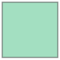
'Polygon' geometry of the zion layerThe extent can now be used for masking. Here, we are also using the all_touched=True option so that pixels partially overlapping with the extent are also included in the output.
out_image_crop, out_transform_crop = rasterio.mask.mask(
src_srtm,
[bb],
crop=True,
all_touched=True,
nodata=9999
)Finally, we can perform crop and mask operations, using rasterio.mask.mask with crop=True. When writing to file, it is now crucial to update the transform and dimensions, since they were modified as a result of cropping. Also note that out_image_mask_crop is a three-dimensional array (even tough it has one band in this case), so the number of rows and columns are in .shape[1] and .shape[2] (rather than .shape[0] and .shape[1]), respectively.
out_image_mask_crop, out_transform_mask_crop = rasterio.mask.mask(
src_srtm,
zion.geometry,
crop=True,
nodata=9999
)
dst_kwargs = src_srtm.meta
dst_kwargs.update({
'nodata': 9999,
'transform': out_transform_mask_crop,
'width': out_image_mask_crop.shape[2],
'height': out_image_mask_crop.shape[1]
})
new_dataset = rasterio.open('output/srtm_masked_cropped.tif', 'w', **dst_kwargs)
new_dataset.write(out_image_mask_crop)
new_dataset.close()
src_srtm_mask_crop = rasterio.open('output/srtm_masked_cropped.tif')out_image_mask_crop.shape(1, 436, 439)Figure 5.2 shows the original raster, and the all of the masked and cropped results.
# Original
fig, ax = plt.subplots(figsize=(3.5, 3.5))
rasterio.plot.show(src_srtm, ax=ax)
zion.plot(ax=ax, color='none', edgecolor='black');
# Masked
fig, ax = plt.subplots(figsize=(3.5, 3.5))
rasterio.plot.show(src_srtm_mask, ax=ax)
zion.plot(ax=ax, color='none', edgecolor='black');
# Cropped
fig, ax = plt.subplots(figsize=(3.5, 3.5))
rasterio.plot.show(out_image_crop, transform=out_transform_crop, ax=ax)
zion.plot(ax=ax, color='none', edgecolor='black');
# Masked+Cropped
fig, ax = plt.subplots(figsize=(3.5, 3.5))
rasterio.plot.show(src_srtm_mask_crop, ax=ax)
zion.plot(ax=ax, color='none', edgecolor='black');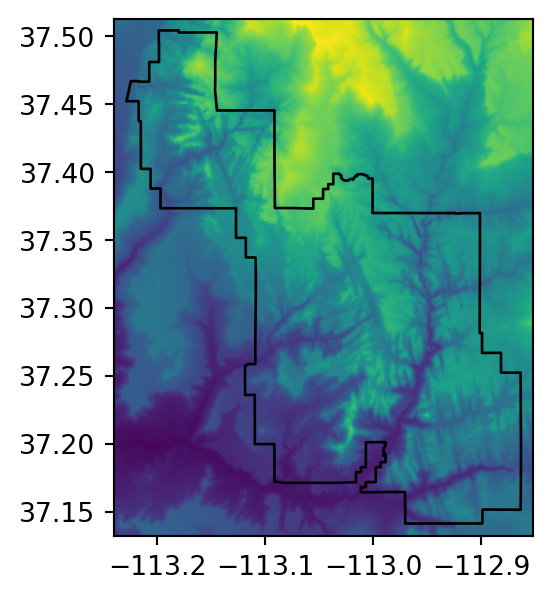
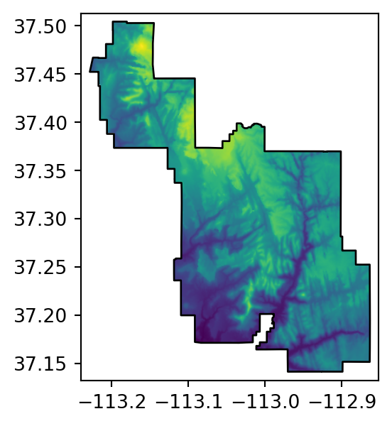
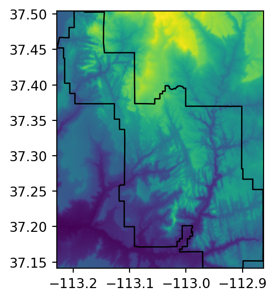
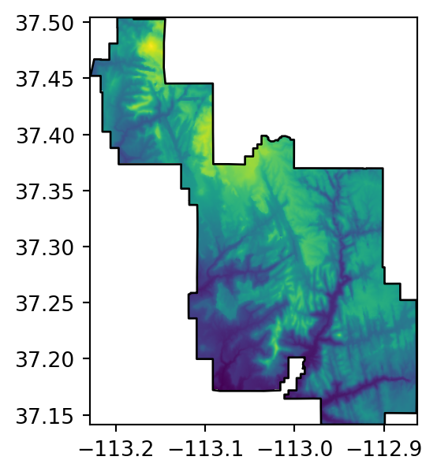
5.3 Raster extraction
Raster extraction is the process of identifying and returning the values associated with a ‘target’ raster at specific locations, based on a (typically vector) geographic ‘selector’ object. The reverse of raster extraction—assigning raster cell values based on vector objects—is rasterization, described in Section 5.4.
In the following examples, we use a package called rasterstats, which is specifically aimed at extracting raster values:
- To points (Section 5.3.1) or to lines (Section 5.3.2), via the
rasterstats.point_queryfunction - To polygons (Section 5.3.3), via the
rasterstats.zonal_statsfunction
5.3.1 Extraction to points
The simplest type of raster extraction is getting the values of raster cells at specific points. To demonstrate extraction to points, we will use zion_points, which contains a sample of 30 locations within the Zion National Park (Figure 5.3).
fig, ax = plt.subplots()
rasterio.plot.show(src_srtm, ax=ax)
zion_points.plot(ax=ax, color='black');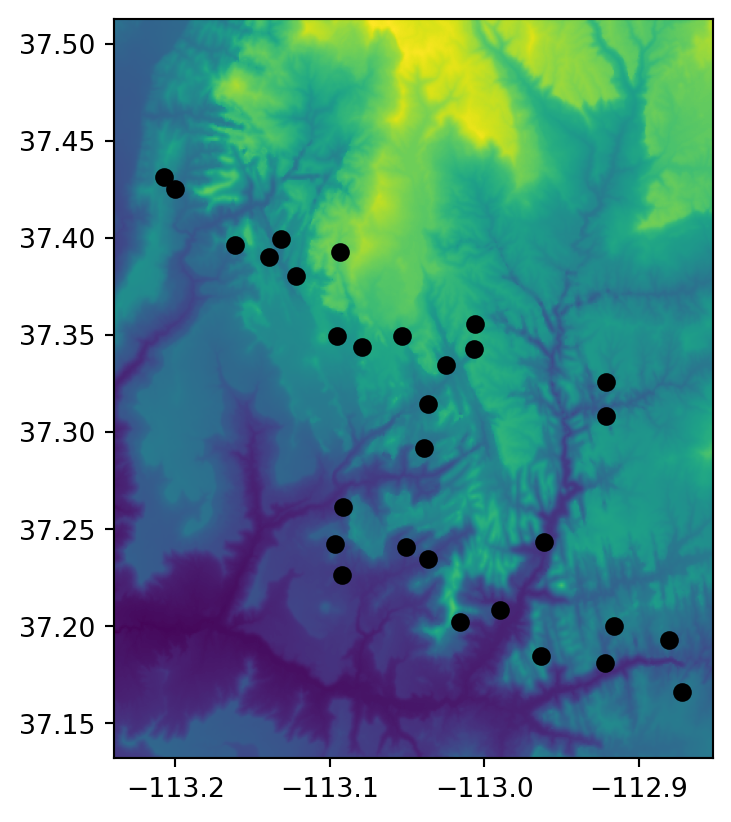
The following expression extracts elevation values from srtm.tif according to zion_points, using rasterstats.point_query.
result = rasterstats.point_query(
zion_points,
src_srtm.read(1),
nodata = src_srtm.nodata,
affine = src_srtm.transform,
interpolate='nearest'
)The resulting object is a list of raster values, corresponding to zion_points. For example, here are the elevations of the first five points.
result[:5][1802, 2433, 1886, 1370, 1452]To get a GeoDataFrame with the original points geometries (and other attributes, if any), as well as the extracted raster values, we can assign the extraction result into a new column.
zion_points['elev'] = result
zion_points| geometry | elev | |
|---|---|---|
| 0 | POINT (-112.91587 37.20013) | 1802 |
| 1 | POINT (-113.09369 37.39263) | 2433 |
| 2 | POINT (-113.02462 37.33466) | 1886 |
| ... | ... | ... |
| 27 | POINT (-113.03655 37.23446) | 1372 |
| 28 | POINT (-113.13933 37.39004) | 1905 |
| 29 | POINT (-113.09677 37.24237) | 1574 |
30 rows × 2 columns
5.3.2 Extraction to lines
Raster extraction is also applicable with line selectors. The typical line extraction algorithm is to extract one value for each raster cell touched by a line. However, this particular approach is not recommended to obtain values along the transects, as it is hard to get the correct distance between each pair of extracted raster values.
For line extraction, a better approach is to split the line into many points (at equal distances along the line) and then extract the values for these points using the “extraction to points” technique (Section 5.3.1). To demonstrate this, the code below creates (see Section 1.2 for recap) zion_transect, a straight line going from northwest to southeast of the Zion National Park.
coords = [[-113.2, 37.45], [-112.9, 37.2]]
zion_transect = shapely.LineString(coords)
print(zion_transect)LINESTRING (-113.2 37.45, -112.9 37.2)The utility of extracting heights from a linear selector is illustrated by imagining that you are planning a hike. The method demonstrated below provides an ‘elevation profile’ of the route (the line does not need to be straight), useful for estimating how long it will take due to long climbs.
First, we need to create a layer consisting of points along our line (zion_transect), at specified intervals (e.g., 250). To do that, we need to transform the line into a projected CRS (so that we work with true distances, in \(m\)), such as UTM. This requires going through a GeoSeries, as shapely geometries have no CRS definition nor concept of reprojection (see Section 1.2.6).
zion_transect_utm = gpd.GeoSeries(zion_transect, crs=4326).to_crs(32612)
zion_transect_utm = zion_transect_utm.iloc[0]The printout of the new geometry shows this is still a straight line between two points, only with coordinates in a projected CRS.
print(zion_transect_utm)LINESTRING (305399.67208180577 4147066.650206682, 331380.8917453843 4118750.0947884847)Next, we need to calculate the distances, along the line, where points are going to be generated, using np.arange. This is a numeric sequence starting at 0, going up to line .length, in steps of 250 (\(m\)).
distances = np.arange(0, zion_transect_utm.length, 250)
distances[:7] ## First 7 distance cutoff pointsarray([ 0., 250., 500., 750., 1000., 1250., 1500.])The distances cutoffs are used to sample (“interpolate”) points along the line. The shapely .interpolate method is used to generate the points, which then are reprojected back to the geographic CRS of the raster (EPSG:4326).
zion_transect_pnt = [zion_transect_utm.interpolate(distance) for distance in distances]
zion_transect_pnt = gpd.GeoSeries(zion_transect_pnt, crs=32612).to_crs(src_srtm.crs)
zion_transect_pnt0 POINT (-113.20000 37.45000)
1 POINT (-113.19804 37.44838)
2 POINT (-113.19608 37.44675)
...
151 POINT (-112.90529 37.20443)
152 POINT (-112.90334 37.20280)
153 POINT (-112.90140 37.20117)
Length: 154, dtype: geometryFinally, we extract the elevation values for each point in our transect and combine the information with zion_transect_pnt (after “promoting” it to a GeoDataFrame, to accommodate extra attributes), using the point extraction method shown earlier (Section 5.3.1). We also attach the respective distance cutoff points distances.
result = rasterstats.point_query(
zion_transect_pnt,
src_srtm.read(1),
nodata = src_srtm.nodata,
affine = src_srtm.transform,
interpolate='nearest'
)
zion_transect_pnt = gpd.GeoDataFrame(geometry=zion_transect_pnt)
zion_transect_pnt['dist'] = distances
zion_transect_pnt['elev'] = result
zion_transect_pnt| geometry | dist | elev | |
|---|---|---|---|
| 0 | POINT (-113.20000 37.45000) | 0.0 | 2001 |
| 1 | POINT (-113.19804 37.44838) | 250.0 | 2037 |
| 2 | POINT (-113.19608 37.44675) | 500.0 | 1949 |
| ... | ... | ... | ... |
| 151 | POINT (-112.90529 37.20443) | 37750.0 | 1837 |
| 152 | POINT (-112.90334 37.20280) | 38000.0 | 1841 |
| 153 | POINT (-112.90140 37.20117) | 38250.0 | 1819 |
154 rows × 3 columns
The information in zion_transect_pnt, namely the 'dist' and 'elev' attributes, can now be used to draw an elevation profile, as illustrated in Figure 5.4.
# Raster and a line transect
fig, ax = plt.subplots()
rasterio.plot.show(src_srtm, ax=ax)
gpd.GeoSeries(zion_transect).plot(ax=ax, color='black')
zion.plot(ax=ax, color='none', edgecolor='white');
# Elevation profile
fig, ax = plt.subplots()
zion_transect_pnt.set_index('dist')['elev'].plot(ax=ax)
ax.set_xlabel('Distance (m)')
ax.set_ylabel('Elevation (m)');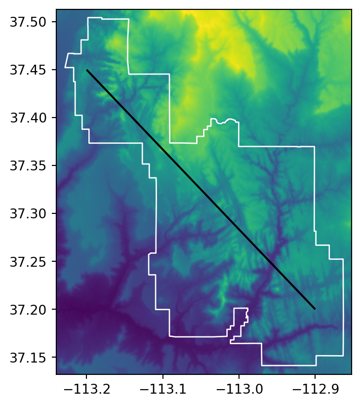
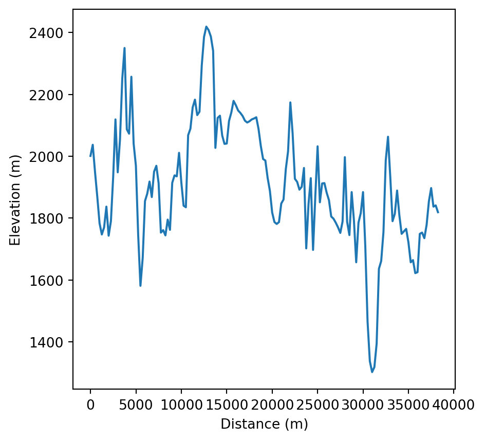
5.3.3 Extraction to polygons
The final type of geographic vector object for raster extraction is polygons. Like lines, polygons tend to return many raster values per polygon. For continuous rasters (Figure 5.5 (a)), we typically want to generate summary statistics for raster values per polygon, for example to characterize a single region or to compare many regions. The generation of raster summary statistics, by polygons, is demonstrated in the code below using rasterstats.zonal_stats, which creates a list of summary statistics (in this case a list of length 1, since there is just one polygon).
result = rasterstats.zonal_stats(
zion,
src_srtm.read(1),
nodata = src_srtm.nodata,
affine = src_srtm.transform,
stats = ['mean', 'min', 'max']
)
result/usr/local/lib/python3.11/site-packages/rasterstats/main.py:156: ShapelyDeprecationWarning: The 'type' attribute is deprecated, and will be removed in the future. You can use the 'geom_type' attribute instead.
if 'Point' in geom.type:[{'min': 1122.0, 'max': 2661.0, 'mean': 1818.211830154405}]Transformation of the list to a DataFrame (e.g., to attach the derived attributes to the original polygon layer), is straightforward with the pd.DataFrame constructor.
pd.DataFrame(result)| min | max | mean | |
|---|---|---|---|
| 0 | 1122.0 | 2661.0 | 1818.21183 |
Because there is only one polygon in the example, a DataFrame with a single row is returned. However, if zion was composed of more than one polygon, we would accordingly get more rows in the DataFrame. The result provides useful summaries, for example that the maximum height in the park is around 2661 \(m\) above see level.
Note the stats argument, where we determine what type of statistics are calculated per polygon. Possible values other than 'mean', 'min', 'max' are:
'count'—The number of valid (i.e., excluding “No Data”) pixels'nodata'—The number of pixels with ’No Data”'majority'—The most frequently occurring value'median'—The median value
See the documentation of rasterstats.zonal_stats for the complete list. Additionally, the rasterstats.zonal_stats function accepts user-defined functions for calculating any custom statistics.
To count occurrences of categorical raster values within polygons (Figure 5.5 (b)), we can use masking (Section 5.2) combined with np.unique, as follows.
out_image, out_transform = rasterio.mask.mask(
src_nlcd,
zion.geometry.to_crs(src_nlcd.crs),
crop=False,
nodata=9999
)
counts = np.unique(out_image, return_counts=True)
counts(array([ 2, 3, 4, 5, 6, 7, 8, 15], dtype=uint8),
array([ 4205, 98285, 298299, 203701, 235, 62, 679, 852741]))According to the result, for example, pixel value 2 (“Developed” class) appears in 4205 pixels within the Zion polygon.
Figure 5.5 illustrates the two types of raster extraction to polygons described above.
# Continuous raster
fig, ax = plt.subplots()
rasterio.plot.show(src_srtm, ax=ax)
zion.plot(ax=ax, color='none', edgecolor='black');
# Categorical raster
fig, ax = plt.subplots()
rasterio.plot.show(src_nlcd, ax=ax, cmap='Set3')
zion.to_crs(src_nlcd.crs).plot(ax=ax, color='none', edgecolor='black');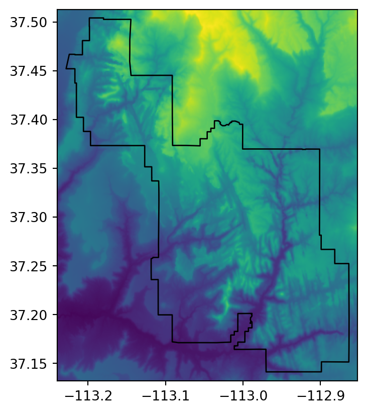
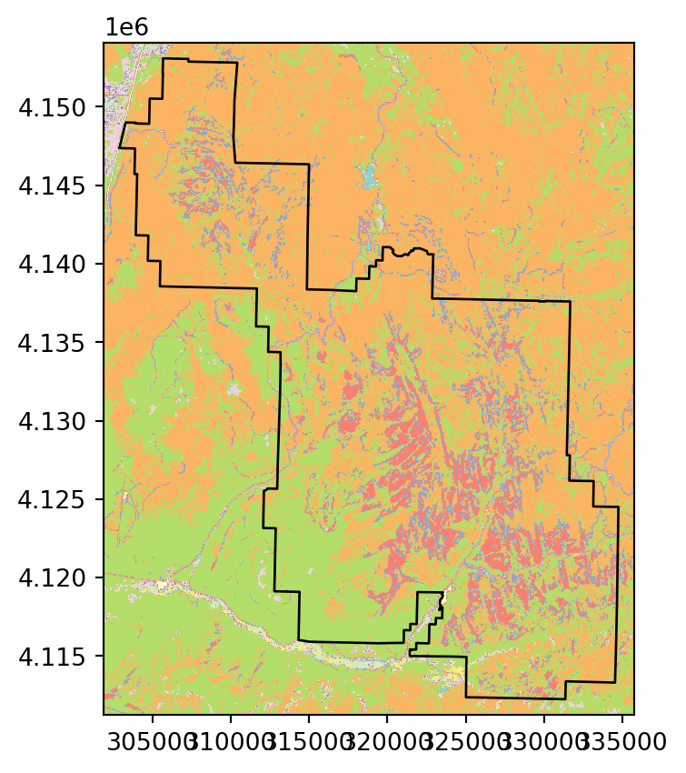
5.4 Rasterization
5.4.1 Rasterizing points
Rasterization is the conversion of vector objects into their representation in raster objects. Usually, the output raster is used for quantitative analysis (e.g., analysis of terrain) or modeling. As we saw in Chapter 1, the raster data model has some characteristics that make it conducive to certain methods. Furthermore, the process of rasterization can help simplify datasets because the resulting values all have the same spatial resolution: rasterization can be seen as a special type of geographic data aggregation.
The rasterio package contains the rasterio.features.rasterize function for doing this work. To make it happen, we need to have the “template” grid definition, i.e., the “template” raster defining the extent, resolution and CRS of the output, in the out_shape (the output dimensions) and transform (the transformation matrix) arguments of rasterio.features.rasterize. In case we have an existing template raster, we simply need to query its .shape and .transform. On the other hand, if we need to create a custom template, e.g., covering the vector layer extent with specified resolution, there is some extra work to calculate both of these objects (see next example).
Furthermore, the rasterio.features.rasterize function requires the input vector shapes in the form of a generator of (geom,value) tuples, where:
geomis the given geometry (shapely geometry object)valueis the value to be “burned” into pixels coinciding with the geometry (intorfloat)
Again, this will be made clear in the next example.
The geographic resolution of the “template” raster has a major impact on the results: if it is too low (cell size is too large), the result may miss the full geographic variability of the vector data; if it is too high, computational times may be excessive. There are no simple rules to follow when deciding an appropriate geographic resolution, which is heavily dependent on the intended use of the results. Often the target resolution is imposed on the user, for example when the output of rasterization needs to be aligned to the existing raster.
To demonstrate rasterization in action, we will use a template raster that has the same extent and CRS as the input vector data cycle_hire_osm_projected (a dataset on cycle hire points in London, illustrated in Figure 5.6 (a)) and a spatial resolution of 1000 \(m\). First, we take the vector layer and transform it to a projected CRS:
cycle_hire_osm_projected = cycle_hire_osm.to_crs(27700)Next, we need to calculate the out_shape and transform of our template raster. To calculate the transform, we combine the top-left corner of the cycle_hire_osm_projected bounding box with the required resolution (e.g., 1000 \(m\)):
bounds = cycle_hire_osm_projected.total_bounds
res = 1000
transform = rasterio.transform.from_origin(
west=bounds[0],
north=bounds[3],
xsize=res,
ysize=res
)
transformAffine(1000.0, 0.0, 523038.61452275474,
0.0, -1000.0, 184971.40854297992)To calculate the out_shape, we divide the x-axis and y-axis extent by the resolution, and take the ceiling of the results:
rows = math.ceil((bounds[3] - bounds[1]) / res)
cols = math.ceil((bounds[2] - bounds[0]) / res)
shape = (rows, cols)
shape(11, 16)Now, we can rasterize. Rasterization is a very flexible operation: the results depend not only on the nature of the template raster, but also on the type of input vector (e.g., points, polygons), the pixel “activation” method, and the function applied when there is more than one match.
To illustrate this flexibility, we will try three different approaches to rasterization (Figure 5.6 (b)-(d)). First, we create a raster representing the presence or absence of cycle hire points (known as presence/absence rasters). In this case, we transfer the value of 1 to all pixels where at least one point falls in. To transform the point GeoDataFrame into a generator of shapely geometries and the (fixed) values, we use the following expression.
g = ((g, 1) for g in cycle_hire_osm_projected.geometry.to_list())
g<generator object <genexpr> at 0x7f62a9dbdcb0>Then, the rasterizing expression takes the generator g, the template shape and transform as arguments.
ch_raster1 = rasterio.features.rasterize(
shapes=g,
out_shape=shape,
transform=transform
)
ch_raster1The result ch_raster1 is an ndarray with the burned values of 1 where the pixel coincides with at least one point, and 0 in “unaffected” pixels.
To count the number of bike hire stations, we can use the fixed value of 1 combined with the merge_alg=rasterio.enums.MergeAlg.add, which means that multiple values burned into the same pixel are summed, rather than replaced keeping last (the default).
g = ((g, 1) for g in cycle_hire_osm_projected.geometry.to_list())
ch_raster2 = rasterio.features.rasterize(
shapes=g,
out_shape=shape,
transform=transform,
merge_alg=rasterio.enums.MergeAlg.add
)
ch_raster2The new output, ch_raster2, shows the number of cycle hire points in each grid cell. The cycle hire locations have different numbers of bicycles described by the capacity variable, raising the question, what is the capacity in each grid cell? To calculate that, we must sum the field ('capacity') rather than the fixed values of 1. This requires using an expanded generator of geometries and values, where we (1) extract both geometries and attribute values, and (2) filter out “No Data” values, which can be done as follows.
g = ((g, v) for g, v in cycle_hire_osm_projected[['geometry', 'capacity']] \
.dropna(subset='capacity')
.to_numpy() \
.tolist())
ch_raster3 = rasterio.features.rasterize(
shapes=g,
out_shape=shape,
transform=transform,
merge_alg=rasterio.enums.MergeAlg.add
)
ch_raster3The result ch_raster3 shows the total capacity of cycle hire points in each grid cell.
The input point layer cycle_hire_osm_projected and the three variants of rasterizing it ch_raster1, ch_raster2, and ch_raster3 are shown in Figure 5.6.
# Input points
fig, ax = plt.subplots()
cycle_hire_osm_projected.plot(column='capacity', ax=ax);
# Presence/Absence
fig, ax = plt.subplots()
rasterio.plot.show(ch_raster1, transform=transform, ax=ax);
# Point counts
fig, ax = plt.subplots()
rasterio.plot.show(ch_raster2, transform=transform, ax=ax);
# Summed attribute values
fig, ax = plt.subplots()
rasterio.plot.show(ch_raster3, transform=transform, ax=ax);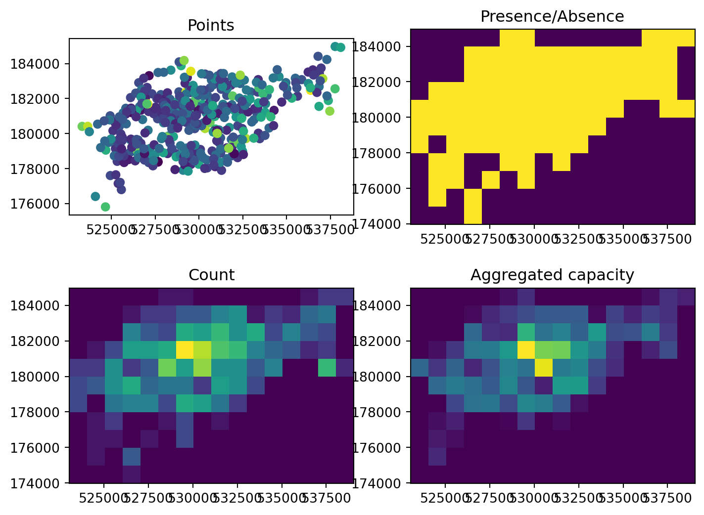
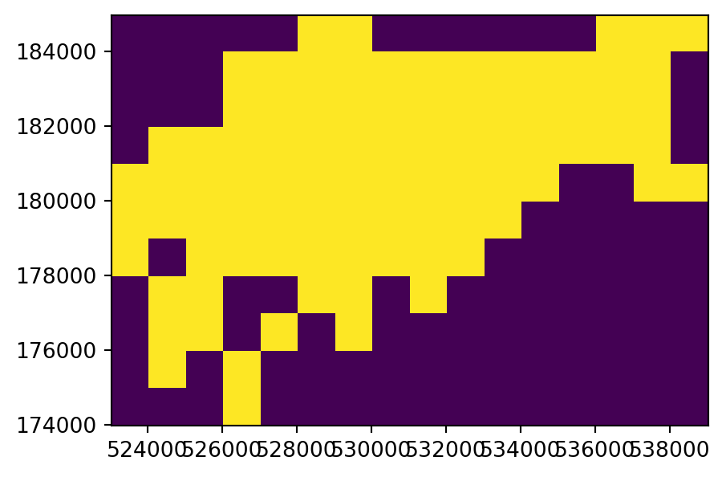
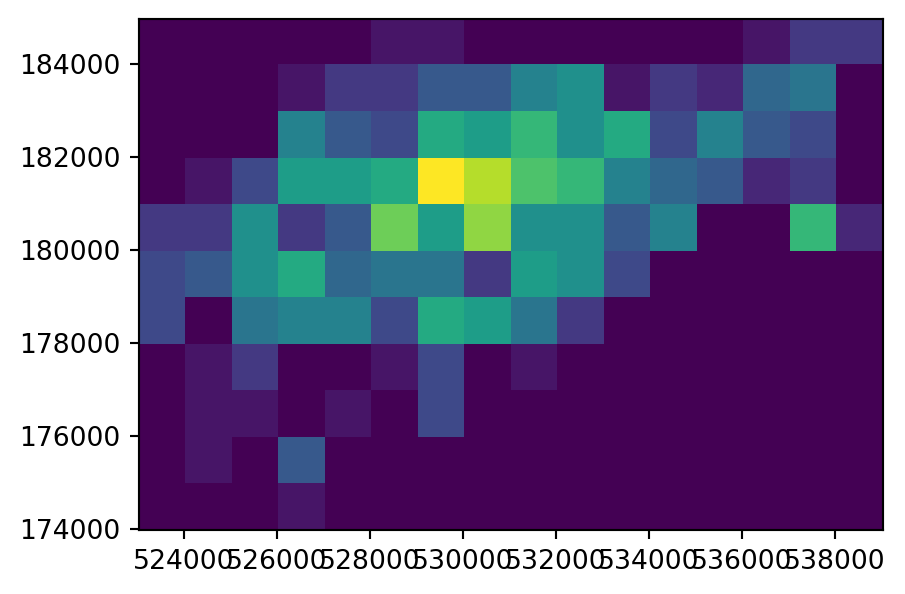
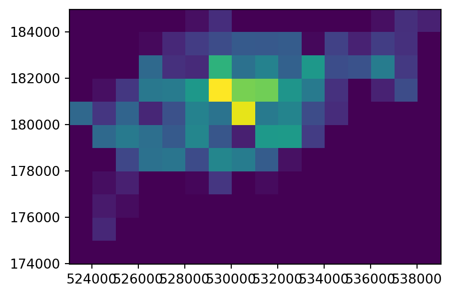
5.4.2 Rasterizing lines and polygons
Another dataset based on California’s polygons and borders (created below) illustrates rasterization of lines. There are three preliminary steps. First, we subset the California polygon.
california = us_states[us_states['NAME'] == 'California']
california| GEOID | NAME | REGION | ... | total_pop_10 | total_pop_15 | geometry | |
|---|---|---|---|---|---|---|---|
| 26 | 06 | California | West | ... | 36637290.0 | 38421464.0 | MULTIPOLYGON (((-118.60337 33.4... |
1 rows × 7 columns
Second, we “cast” the polygon into a 'MultiLineString' geometry, using the .boundary property that GeoSeries have.
california_borders = california.geometry.boundary
california_borders26 MULTILINESTRING ((-118.60337 33...
dtype: geometryThird, we create a template raster with a resolution of a 0.5 degree, using the same approach as in Section 5.4.1.
bounds = california_borders.total_bounds
res = 0.5
transform = rasterio.transform.from_origin(
west=bounds[0],
north=bounds[3],
xsize=res,
ysize=res
)
rows = math.ceil((bounds[3] - bounds[1]) / res)
cols = math.ceil((bounds[2] - bounds[0]) / res)
shape = (rows, cols)
shape(19, 21)Finally, we rasterize california_borders based on the calculated template’s shape and transform. When considering line or polygon rasterization, one useful additional argument is all_touched. By default it is False, but when changed to True—all cells that are touched by a line or polygon border get a value. Line rasterization with all_touched=True is demonstrated in the code below (Figure 5.7, left). We are also using fill=np.nan to set “background” values as “No Data”.
california_raster1 = rasterio.features.rasterize(
((g, 1) for g in california_borders.to_list()),
out_shape=shape,
transform=transform,
all_touched=True,
fill=np.nan
)Compare it to a polygon rasterization, with all_touched=False (the default), which selects only raster cells whose centroids are inside the selector polygon, as illustrated in Figure 5.7 (right).
california_raster2 = rasterio.features.rasterize(
((g, 1) for g in california.geometry.to_list()),
out_shape=shape,
transform=transform,
fill=np.nan
)To illustrate which raster pixels are actually selected as part of rasterization, we also show them as points. This also requires the following code section to calculate the points, which we explain in Section 5.5.
ids = california_raster1.copy()
ids = np.arange(0, california_raster1.size) \
.reshape(california_raster1.shape) \
.astype(np.int32)
shapes = rasterio.features.shapes(ids, transform=transform)
pol = list(shapes)
pnt = [shapely.geometry.shape(i[0]).centroid for i in pol]
pnt = gpd.GeoSeries(pnt)Figure 5.7 shows the input vector layer, the rasterization results, and the points pnt.
# Line rasterization
fig, ax = plt.subplots()
rasterio.plot.show(california_raster1, transform=transform, ax=ax, cmap='Set3')
gpd.GeoSeries(california_borders).plot(ax=ax, edgecolor='darkgrey', linewidth=1)
pnt.plot(ax=ax, color='black', markersize=1);
# Polygon rasterization
fig, ax = plt.subplots()
rasterio.plot.show(california_raster2, transform=transform, ax=ax, cmap='Set3')
california.plot(ax=ax, color='none', edgecolor='darkgrey', linewidth=1)
pnt.plot(ax=ax, color='black', markersize=1);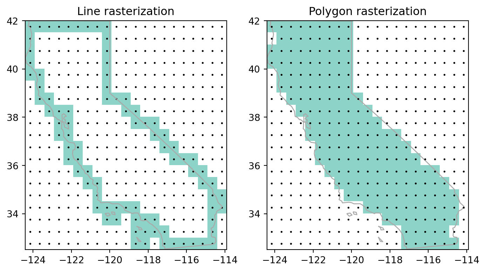
all_touched=True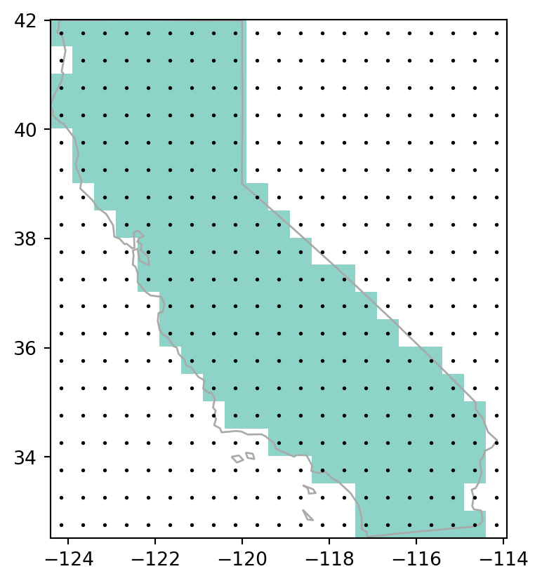
all_touched=False5.5 Spatial vectorization
Spatial vectorization is the counterpart of rasterization (Section 5.4). It involves converting spatially continuous raster data into spatially discrete vector data such as points, lines or polygons. There are three standard methods to convert a raster to a vector layer, which we cover next:
- Raster to polygons (Section 5.5.1)—the most straightforward form of vectorization, converting raster cells to polygons, where each pixel is represented by a rectangular polygon
- Raster to points (Section 5.5.2)—has the additional step of calculating polygon centroids
- Raster to contours (Section 5.5.3)
Let us demonstrate all three in the given order.
5.5.1 Raster to polygons
The rasterio.features.shapes function can be used to access to the raster pixel as polygon geometries, as well as raster values. The returned object is a generator, which yields geometry,value pairs. The additional transform argument is used to yield true spatial coordinates of the polygons, which is usually what we want.
For example, the following expression returns a generator named shapes, referring to the pixel polygons.
shapes = rasterio.features.shapes(
rasterio.band(src_grain, 1),
transform=src_grain.transform
)
shapes<generator object shapes at 0x7f62aa0cece0>We can generate all shapes at once into a list named pol with list(shapes).
pol = list(shapes)Each element in pol is a tuple of length 2, containing the GeoJSON-like dict—representing the polygon geometry and the value of the pixel(s)—which comprise the polygon. For example, check the first element of pol with pol[0].
Note that each raster cell is converted into a polygon consisting of five coordinates, all of which are stored in memory (explaining why rasters are often fast compared with vectors!).
To transform this list into a GeoDataFrame, we need few more steps of data reshaping.
# 'GeoSeries' with the polygons
geom = [shapely.geometry.shape(i[0]) for i in pol]
geom = gpd.GeoSeries(geom, crs=src_grain.crs)
# 'Series' with the values
values = [i[1] for i in pol]
values = pd.Series(values)
# Combine into a 'GeoDataFrame'
result = gpd.GeoDataFrame({'value': values, 'geometry': geom})
result| value | geometry | |
|---|---|---|
| 0 | 1.0 | POLYGON ((-1.50000 1.50000, -1.... |
| 1 | 0.0 | POLYGON ((-1.00000 1.50000, -1.... |
| 2 | 1.0 | POLYGON ((-0.50000 1.50000, -0.... |
| ... | ... | ... |
| 11 | 2.0 | POLYGON ((0.00000 -0.50000, 0.5... |
| 12 | 0.0 | POLYGON ((0.50000 -1.00000, 0.5... |
| 13 | 2.0 | POLYGON ((1.00000 -1.00000, 1.0... |
14 rows × 2 columns
The resulting polygon layer is shown in Figure 5.8. As shown using the edgecolor='black' option, neighboring pixels sharing the same raster value are dissolved into larger polygons. The rasterio.features.shapes function does not offer a way to avoid this type of dissolving. One way to work around that is to convert an array with consecutive IDs, instead of the real values, to polygons, then extract the real values from the raster (see the example in Section 5.5.2).
result.plot(column='value', edgecolor='black', legend=True);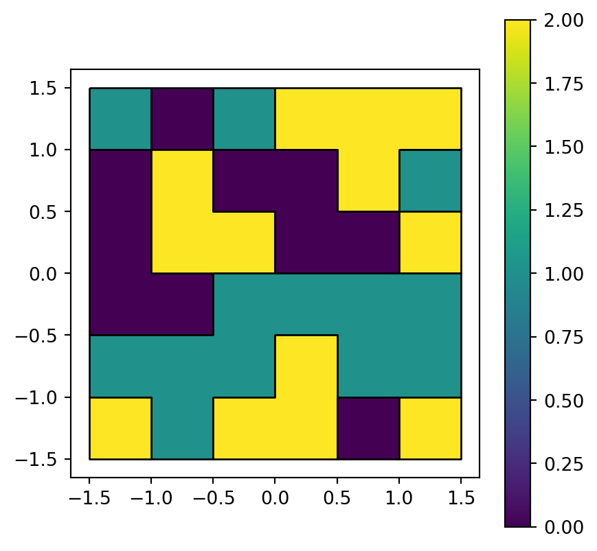
grain.tif converted to a polygon layer5.5.2 Raster to points
To transform raster to points, we can use rasterio.features.shapes, same as in conversion to polygons (Section 5.5.2), only with the addition of the .centroid method to go from polygons to their centroids. However, to avoid dissolving nearby pixels, we will actually convert a raster with consecutive IDs, then extract the “true” values by point (it is not strictly necessary in this example, since the values of elev.tif are all unique).
First, we create an ndarray with consecutive IDs, matching the shape of elev.tif raster values.
r = src_elev.read(1)
ids = r.copy()
ids = np.arange(0, r.size).reshape(r.shape).astype(np.int32)
idsarray([[ 0, 1, 2, 3, 4, 5],
[ 6, 7, 8, 9, 10, 11],
[12, 13, 14, 15, 16, 17],
[18, 19, 20, 21, 22, 23],
[24, 25, 26, 27, 28, 29],
[30, 31, 32, 33, 34, 35]], dtype=int32)Next, we use the rasterio.features.shapes function to create a point layer with the raster cell IDs.
shapes = rasterio.features.shapes(ids, transform=src_elev.transform)
pol = list(shapes)
geom = [shapely.geometry.shape(i[0]).centroid for i in pol]
geom = gpd.GeoSeries(geom, crs=src_elev.crs)
result = gpd.GeoDataFrame(geometry=geom)
result| geometry | |
|---|---|
| 0 | POINT (-1.25000 1.25000) |
| 1 | POINT (-0.75000 1.25000) |
| 2 | POINT (-0.25000 1.25000) |
| ... | ... |
| 33 | POINT (0.25000 -1.25000) |
| 34 | POINT (0.75000 -1.25000) |
| 35 | POINT (1.25000 -1.25000) |
36 rows × 1 columns
Finally, we extract (Section 5.3.1) the elev.tif raster values to points, technically finalizing the raster-to-points conversion.
result['value'] = rasterstats.point_query(
result,
r,
nodata = src_elev.nodata,
affine = src_elev.transform,
interpolate='nearest'
)/usr/local/lib/python3.11/site-packages/rasterstats/io.py:313: UserWarning: Setting nodata to -999; specify nodata explicitly
warnings.warn("Setting nodata to -999; specify nodata explicitly")Figure 5.9 shows the input raster and the resulting point layer.
# Input raster
fig, ax = plt.subplots()
result.plot(column='value', legend=True, ax=ax)
rasterio.plot.show(src_elev, ax=ax);
# Points
fig, ax = plt.subplots()
result.plot(column='value', legend=True, ax=ax)
rasterio.plot.show(src_elev, cmap='Greys', ax=ax);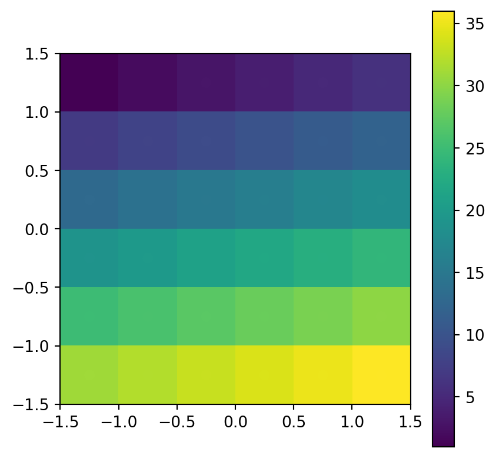
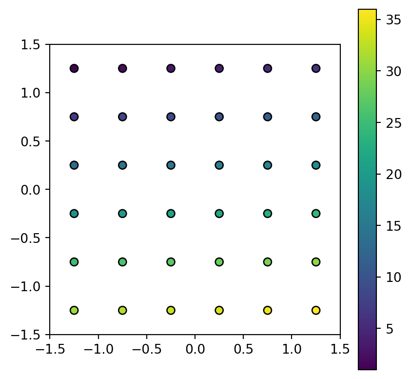
elev.tif5.5.3 Raster to contours
Another common type of spatial vectorization is the creation of contour lines representing lines of continuous height or temperatures (isotherms), for example. We will use a real-world digital elevation model (DEM) because the artificial raster elev.tif produces parallel lines (task for the reader: verify this and explain why this happens). Plotting contour lines is straightforward, using the contour=True option of rasterio.plot.show (Figure 5.10).
fig, ax = plt.subplots()
rasterio.plot.show(src_dem, ax=ax)
rasterio.plot.show(
src_dem,
ax=ax,
contour=True,
levels=np.arange(0,1200,50),
colors='black'
);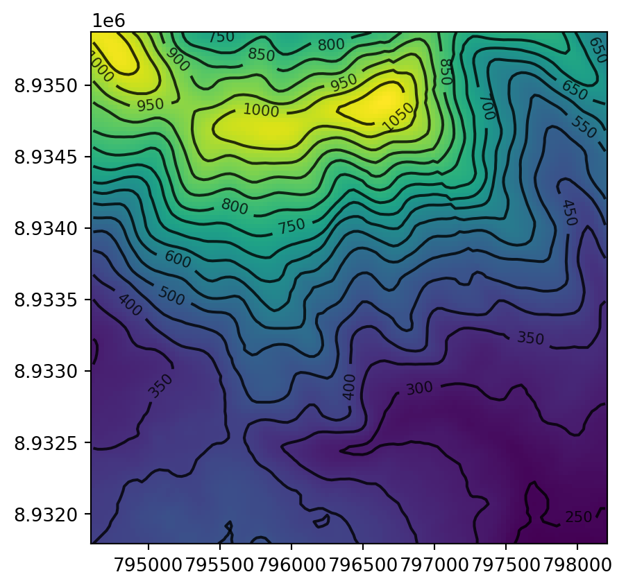
Unfortunately, rasterio does not provide any way of extracting the contour lines in the form of a vector layer, for uses other than plotting.
There are two possible workarounds:
- Using
gdal_contouron the command line (see below), or through its Python interface osgeo - Writing a custom function to export contour coordinates generated by, e.g., matplotlib or skimage
We demonstrate the first approach, using gdal_contour. Although we deviate from the Python-focused approach towards more direct interaction with GDAL, the benefit of gdal_contour is the proven algorithm, customized to spatial data, and with many relevant options. Both the gdal_contour program (along with other GDAL programs) and its osgeo Python wrapper, should already be installed on your system since GDAL is a dependency of rasterio. Using the command line pathway, generating 50 \(m\) contours of the dem.tif file can be done as follows.
os.system('gdal_contour -a elev data/dem.tif output/dem_contour.gpkg -i 50.0')Like all GDAL programs (also see gdaldem example in Section 3.3.4), gdal_contour works with files. Here, the input is the data/dem.tif file and the result is exported to the output/dem_contour.gpkg file.
To illustrate the result, let’s read the resulting dem_contour.gpkg layer back into the Python environment. Note that the layer contains an attribute named 'elev' (as specified using -a elev) with the contour elevation values.
contours1 = gpd.read_file('output/dem_contour.gpkg')
contours1| ID | elev | geometry | |
|---|---|---|---|
| 0 | 0 | 750.0 | LINESTRING (795382.355 8935384.... |
| 1 | 1 | 800.0 | LINESTRING (795237.703 8935384.... |
| 2 | 2 | 650.0 | LINESTRING (798098.379 8935384.... |
| ... | ... | ... | ... |
| 29 | 29 | 450.0 | LINESTRING (795324.083 8931774.... |
| 30 | 30 | 450.0 | LINESTRING (795488.616 8931774.... |
| 31 | 31 | 450.0 | LINESTRING (795717.420 8931774.... |
32 rows × 3 columns
Figure 5.11 shows the input raster and the resulting contour layer.
fig, ax = plt.subplots()
rasterio.plot.show(src_dem, ax=ax)
contours1.plot(ax=ax, edgecolor='black');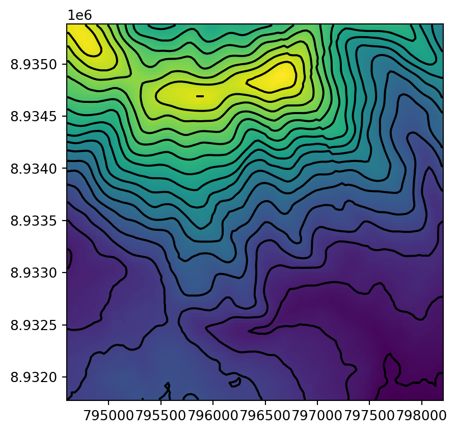
dem.tif raster, calculated using the gdal_contour program5.6 Distance to nearest geometry
Calculating a raster of distances to the nearest geometry is an example of a “global” raster operation (Section 3.3.6). To demonstrate it, suppose that we need to calculate a raster representing the distance to the nearest coast in New Zealand. This example also wraps many of the concepts introduced in this chapter and in previous chapter, such as raster aggregation (Section 4.3.3), raster conversion to points (Section 5.5.2), and rasterizing points (Section 5.4.1).
For the coastline, we will dissolve the New Zealand administrative division polygon layer and “extract” the boundary as a 'MultiLineString' geometry.
coastline = gpd.GeoSeries(nz.unary_union, crs=nz.crs) \
.to_crs(src_nz_elev.crs) \
.boundary
coastline0 MULTILINESTRING ((1229997.901 4...
dtype: geometryFor a “template” raster, we will aggregate the New Zealand DEM, in the nz_elev.tif file, to 5 times coarser resolution. The code section below follows the aggeregation example in Section 4.3.3, then replaces the original (aggregated) values with unique IDs, which is a preliminary step when converting to points, as explained in Section 5.5.2. Finally, we also replace “erase” (i.e., replace with np.nan) IDs which were np.nan in the aggregated elevation raster, i.e., beyond the land area of New Zealand.
factor = 0.2
# Reading aggregated array
r = src_nz_elev.read(1,
out_shape=(
int(src_nz_elev.height * factor),
int(src_nz_elev.width * factor)
),
resampling=rasterio.enums.Resampling.average
)
# Updating the transform
new_transform = src_nz_elev.transform * src_nz_elev.transform.scale(
(src_nz_elev.width / r.shape[1]),
(src_nz_elev.height / r.shape[0])
)
# Generating unique IDs per cell
ids = r.copy()
ids = np.arange(0, r.size).reshape(r.shape).astype(np.float32)
# "Erasing" irrelevant IDs
ids[np.isnan(r)] = np.nan
idsarray([[nan, nan, nan, ..., nan, nan, nan],
[nan, nan, nan, ..., nan, nan, nan],
[nan, nan, nan, ..., nan, nan, nan],
...,
[nan, nan, nan, ..., nan, nan, nan],
[nan, nan, nan, ..., nan, nan, nan],
[nan, nan, nan, ..., nan, nan, nan]], dtype=float32)The result is an array named ids with the IDs, and the corresponding new_transform, as plotted in Figure 5.12.
fig, ax = plt.subplots()
rasterio.plot.show(ids, transform=new_transform, ax=ax)
gpd.GeoSeries(coastline).plot(ax=ax, edgecolor='black');
To calculate distances, we must convert each pixel to a vector (point) geometry. For this purpose, we use the technique demonstrated in Section 5.5.2.
shapes = rasterio.features.shapes(ids, transform=new_transform)
pol = list(shapes)
pnt = [shapely.geometry.shape(i[0]).centroid for i in pol]The result pnt is a list of shapely geometries, representing raster cell centroids (excluding np.nan pixels):
Now we can calculate the corresponding list of distances, using the .distance method from shapely:
distances = [(i, i.distance(coastline)) for i in pnt]
distances[0](<POINT (1572956.546 6189460.927)>,
0 826.752396
dtype: float64)Finally, we rasterize (see Section 5.4.1) the distances into our raster template.
image = rasterio.features.rasterize(
distances,
out_shape=ids.shape,
dtype=np.float_,
transform=new_transform,
fill=np.nan
)
imagearray([[nan, nan, nan, ..., nan, nan, nan],
[nan, nan, nan, ..., nan, nan, nan],
[nan, nan, nan, ..., nan, nan, nan],
...,
[nan, nan, nan, ..., nan, nan, nan],
[nan, nan, nan, ..., nan, nan, nan],
[nan, nan, nan, ..., nan, nan, nan]])The final result, a raster of distances to the nearest coastline, is shown in Figure 5.13.
fig, ax = plt.subplots()
rasterio.plot.show(image, transform=new_transform, ax=ax)
gpd.GeoSeries(coastline).plot(ax=ax, edgecolor='black');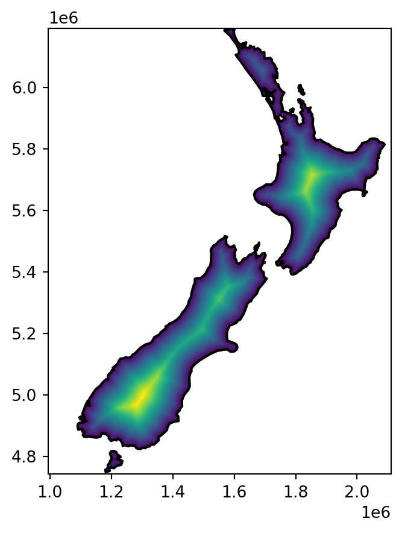